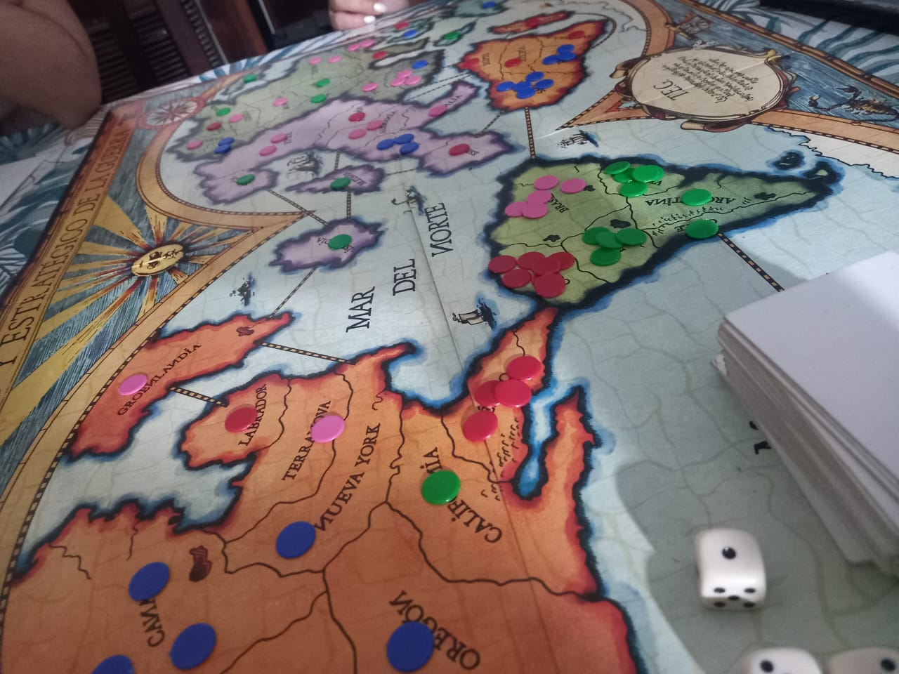
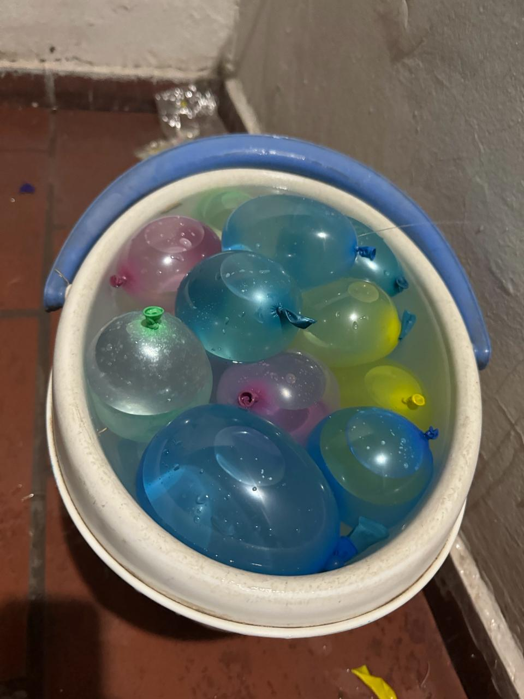
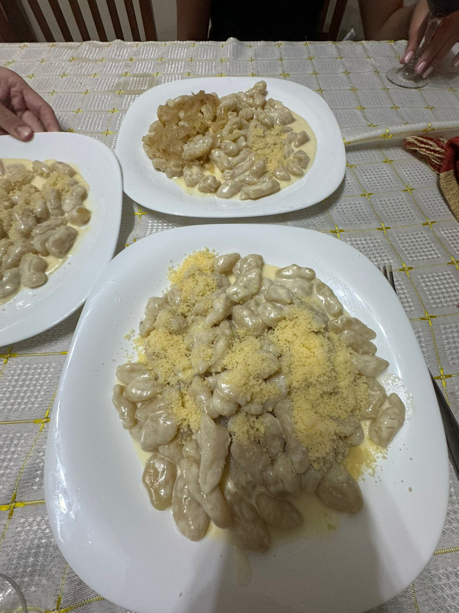

Enero 2024
Enero ha llegado con todo, y no te puedes perder las historias que ya están dando de qué hablar. Te llevaremos por los momentos más destacados del mes!
La alegría se desborda con el nacimiento de dos adorables Pototus. Estos encantadores compañeros estarán listos para encontrar un hogar, ¡y tú podrías ser su afortunado dueño! Marca el 05/02 a las 15hs en tu calendario y no te pierdas la oportunidad de reclamar a tu nuevo Pototus. ¡Visita nuestra noticia ese día a las 15hs para más detalles y prepárate para darle la bienvenida en tu hogar!

Una foto vale más que mil palabras.

Durante esta última semana, León ha disfrutado de momentos inolvidables en la plaza. Compartimos risas y hasta tuvimos un encantador picnic al aire libre en Soldini. Lo más destacado fue la conexión entre León y Charlie, que trascendió la amistad convencional. Un interés especial parece haberse encendido entre ellos!

Después de la inolvidable tragicomedia que fue la historia de amistad y amor entre Barrios y Ari, han decidido reunirse nuevamente, ¡pero esta vez para una emocionante partida de TEG! ¿Podrán superar las tensiones pasadas? ¡Solo el tiempo lo dirá! Además, en un giro inesperado, el grupo conformado por Ame, Katry, Barrios y Ari ha resucitado.
En la emocionante batalla de bombuchas, Agus y Chiara se enfrentaron a Barrios y Katry en una lucha llena de diversión y estrategia. Sin embargo, el destino no estuvo del lado de Agus y Chiara, quienes experimentaron una triste derrota frente a la victoria explosiva de Barrios y Katry. ¿Cómo se desarrollaron los eventos? ¡Descúbrelo en esta inolvidable guerra de bombuchas que dejó a todos con la adrenalina al máximo!
La noche se volvió todo un festín cuando decidimos preparar una montaña de ñoquis de papa. Sin embargo, la emoción pronto desbordó la cocina, y la travesura alcanzó su punto máximo cuando Barrios, en un movimiento arriesgado, manchó la pared con aceite. La diversión culinaria se convirtió en una maratón de limpieza que nos mantuvo ocupados hasta las 6 de la mañana.
TEG online... por favor suban de liga!

Ya tenemos canción más querida y más odiada de Enero.
Más querida: HOLA PERDIDA
Más odiada: RIDE
Los títulos más resaltados fueron...
Games of Thrones (serie)
Berlín (serie)
Echoes (serie)
Mención especial:
Society of the snow (peli)